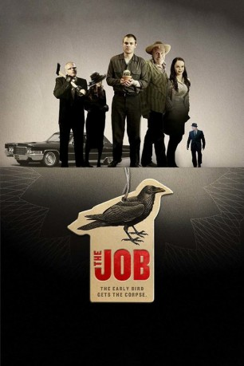

 
 IMDB-Wertung: 5.1 / 10
IMDB-Wertung: 5.1 / 10  Metascore:
Metascore: 
Bubba hangelt sich von einem McJob zum nächsten und hat kein Geld, die Diner-Kellnerin seiner Träume zu verwöhnen. Da vermittelt ihm der kumpelhaft wirkende Handlungsreisende Jim einen Job, für den es ganze zweihunderttausend Dollar auf einen Schlag gibt. Nur soll er dafür einen Menschen töten. Zwar einen, der sich das angeblich bereitwillig gefallen lässt, aber das macht die Sache für Bubba nicht einfacher. Doch steckt er schon knietief drin in der Verschwörung, aus der womöglich selbst die Liebe nicht heraus hilft.
Jahr: 2009
Dauer: 98 Minuten
FSK:
Land: USA Studio: Magnet ReleasingTonspuren: DTS - ,
Untertitel:
Auflösung: 1080p (1920x1080) Größe: 10547 MB
Genre: Thriller, Drama, Komödie
Regisseur: Shem Bitterman
Drehbuch: Shem Bitterman, Shem Bitterman
Soundtrack: Enis Rotthoff
Darsteller:
Datei: X:\2009(G-M)\Job, The (2009, FSK, 1920x1080) 3D.mkv seit 28.11.2018
Festplatte: HD 2009(G-Z)-2010(A-F)
 Es gibt insgesamt 82 Filme in der Gruppe '2009(G-M)'
Es gibt insgesamt 82 Filme in der Gruppe '2009(G-M)'